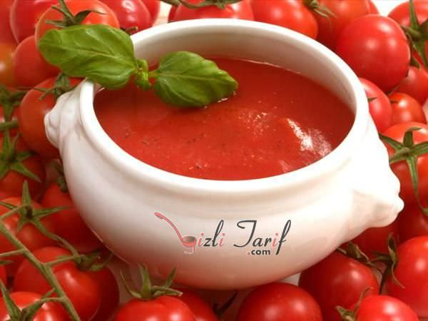

Domates Çorbası
Kaç Kişilik
6 Kişilik
Hazırlama Süresi
30 Dakika
Pişirme Süresi
30 Dakika
Malzeme Listesi
- 5 adetbüyük boy sulu domates
- 2 yemek kaşığıun
- 1 yemek kaşığıtereyağı
- 4 su bardağısıcak et suyu
- 1 adetsoğan
- 1 yemek kaşığıun
- 2 çay bardağısıcak süt
Yapılışı
1 yemek kaşığı tereyağını bir tavada eritin. 2 yemek kaşığı unu ekleyip kokusu çıkana kadar kısık ateşte, tereyağında kavurun. 5 adet rendelenmiş domatesi kavrulmuş un karışımına ekledikten sonra 5 dakika kadar pişirin. Üzerine 4 su bardağı sıcak et suyunu ilave edin. Kesilmemesi için küçük bir cezvede ısıttığınız 2 çay bardağı sütü azar azar ekleyip hızlıca karıştırın. Çorbayı kaynayana kadar orta ateşte ardından da kısık ateşte 15 dakika kadar pişirin. Daha pürüzsüz bir kıvam alması için blenderdan geçirin. Servis kaselerine aldığınız çorbayı, rendelenmiş kaşar peyniri ilavesiyle sıcak olarak servis edin. Afiyet olsun!
1 yemek kaşığı tereyağını bir tavada eritin. 2 yemek kaşığı unu ekleyip kokusu çıkana kadar kısık ateşte, tereyağında kavurun. 5 adet rendelenmiş domatesi kavrulmuş un karışımına ekledikten sonra 5 dakika kadar pişirin. Üzerine 4 su bardağı sıcak et suyunu ilave edin. Kesilmemesi için küçük bir cezvede ısıttığınız 2 çay bardağı sütü azar azar ekleyip hızlıca karıştırın. Çorbayı kaynayana kadar orta ateşte ardından da kısık ateşte 15 dakika kadar pişirin. Daha pürüzsüz bir kıvam alması için blenderdan geçirin. Servis kaselerine aldığınız çorbayı, rendelenmiş kaşar peyniri ilavesiyle sıcak olarak servis edin. Afiyet olsun!